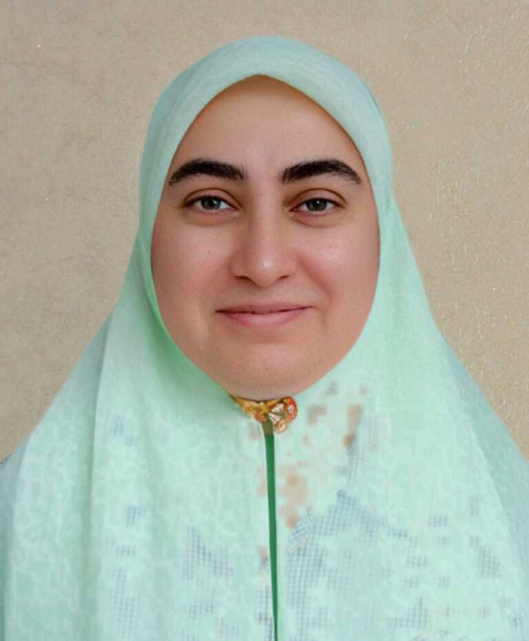
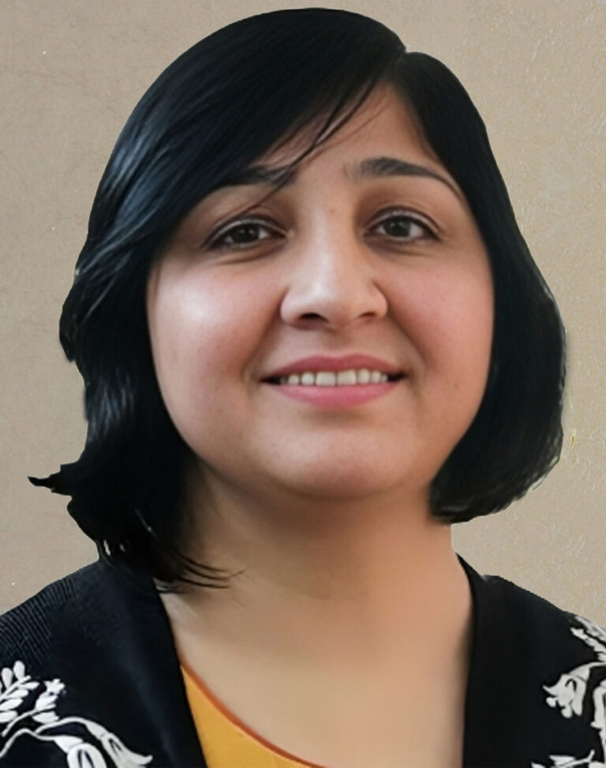

The mission, the approach, and the team behind PODA's work with rural women, youth and minorities across Pakistan.
PODA is a women's rights NGO working for the promotion and protection of human rights in rural areas of Pakistan by conducting evidence-based research, rights-based programming, and impact-oriented advocacy for a cohesive and democratic society. Our current programs include climate change education, women's rights advocacy, and constitutional rights education.
PODA's mission is to facilitate the empowerment of rural women, youth and minorities through education, livelihood skills, legal literacy and human rights advocacy to build a democratic society.
A democratic society based on gender equity and economic justice, where all people can enjoy their "Right to Development."
From a founding mission in 2003 to a nationwide network of women leaders — the key moments that shaped PODA's work.
Established as the Potohar Organization for Development Advocacy (PODA) to promote human rights, women's empowerment, democratic governance, and sustainable rural development in Pakistan.
Launched foundational programmes on human rights education, community mobilization, women's rights, youth development, and rural livelihoods.
Initiated emergency humanitarian assistance following the Pakistan earthquake, supporting affected communities in Azad Jammu & Kashmir and Khyber Pakhtunkhwa.
Organized the 1st Annual Rural Women Leadership Conference, which has since become PODA's flagship national platform for empowering rural women leaders across Pakistan.
Expanded humanitarian response during the Pakistan floods, establishing women-friendly and child-friendly spaces while providing legal aid, livelihood support, and protection services.
Strengthened democracy and civic participation by facilitating CNIC registration, voter education, legal literacy, and constitutional rights awareness for rural women across multiple provinces.
Expanded programmes on climate-smart agriculture, women's economic empowerment, sustainable livelihoods, and resilience-building for rural communities.
Enhanced digital advocacy, online leadership programmes, and national policy engagement while continuing to organize the Annual Rural Women Leadership Conference.
Led evidence-based advocacy to strengthen child marriage laws in Punjab, contributing to reforms that raised the minimum legal age of marriage for girls to 18 years.
Expanded nationwide civic leadership initiatives through the Rural Women's Network for Civic Leadership and Participation, empowering women leaders across Pakistan.
Launched the Beyond Barriers Project, in partnership with Sightsavers and co-funded by the European Union, to advance the economic empowerment, leadership, and inclusion of women with disabilities and women-led organizations.
PODA has implemented development and humanitarian programmes in more than 130 districts across Pakistan, working with national and international partners to promote women's rights, legal empowerment, democracy, climate resilience, education, and humanitarian response.
Leads PODA's overall strategy and represents the organization's mission of rights-based programming and advocacy for rural women, youth and minorities across Pakistan.

